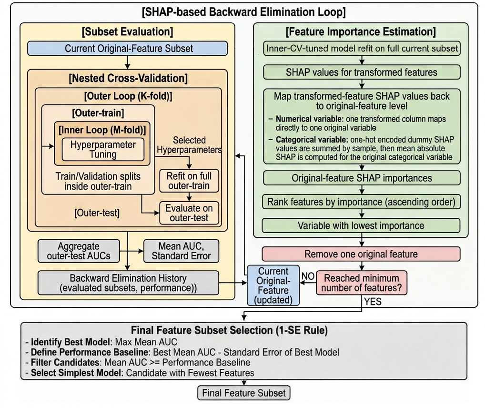

|
Jaehyun Jung
I'm a graduate of Soongsil University, where I majored in Industrial & Information Systems Engineering.
I have been interested in discovering meaningful patterns through data analysis and data mining, and in applying these insights to solving real-world problems.
Currently, I study and experiment with small language models, particularly on their reasoning capabilities.
In the long term, my goal is to learn personalization and multimodal technologies and leverage my data-driven background to develop personalized small agents.
Email /
Github /
Blog1 /
Blog 2
|
|
|
Improving Mathematical Reasoning in a Small Language Model through Structural Error Correction
Analyzed 5K incorrect GSM8K solutions generated by Qwen2.5-0.5B-Instruct and used them as training signals to improve mathematical reasoning in a small language model. Rather than simply teaching correct solution paths, the approach focuses on structurally correcting errors in conceptual understanding, equation formulation, and calculation steps revealed in incorrect reasoning. This resulted in consistent gains over the baseline in lm-eval-harness evaluations on both GSM8K and GSM-Plus, without any additional parameterized modules. Performance improved by 5.91% in zero-shot and 3.41% in 5-shot on GSM8K, and by 3.07% in zero-shot and 1.55% in 5-shot on GSM-Plus.
|
|
|
Domain-Specific SLM for Financial News Sentiment Classification
Developed a 70M T5-style SLM for financial news sentiment classification. It was pre-trained on approximately 54M tokens from scratch and fine-tuned on labeled financial news datasets. By incorporating Slim Attention to improve memory efficiency during inference, the model achieved a test accuracy of 83.41%
|
|

|
SHAP-Based Feature Selection for Public Rental Housing Intention by Household Type
Nested stratified cross-validation and SHAP-based backward elimination were applied, and the 1-SE rule was used to select feature subsets for youth, newlywed, middle-aged, and elderly households.
|
|
|
2023 Public Data Utilization Idea Contest
1st Place, Awarded by Soongsil University
MaxEnt Modeling for Future Aquaculture Site Suitability: A species distribution modeling that combines marine environmental variables, occurrence records, and MaxEnt tuning to estimate future aquaculture site suitability under climate change scenarios.
|
|
|
2022 Public Data Utilization Idea Contest
2nd Place, Awarded by Soongsil University
Imbalanced Binary Classification with Data-Driven Threshold Optimization: Binary classification on public rental housing intention using imbalanced survey data. Class-wise balance is improved through threshold optimization based on minimizing the gap between TPR and TNR, rather than relying on over- or under-sampling.
|
|